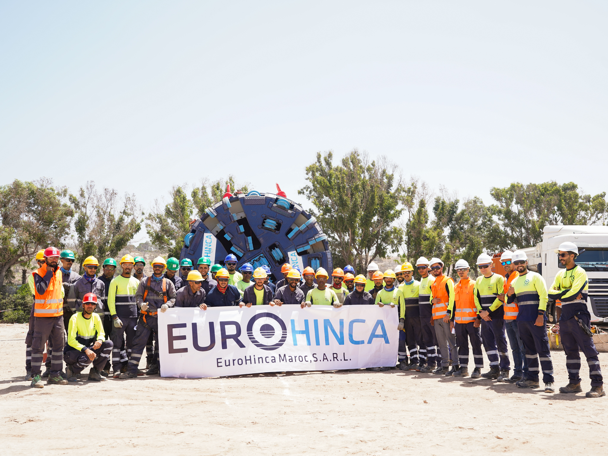
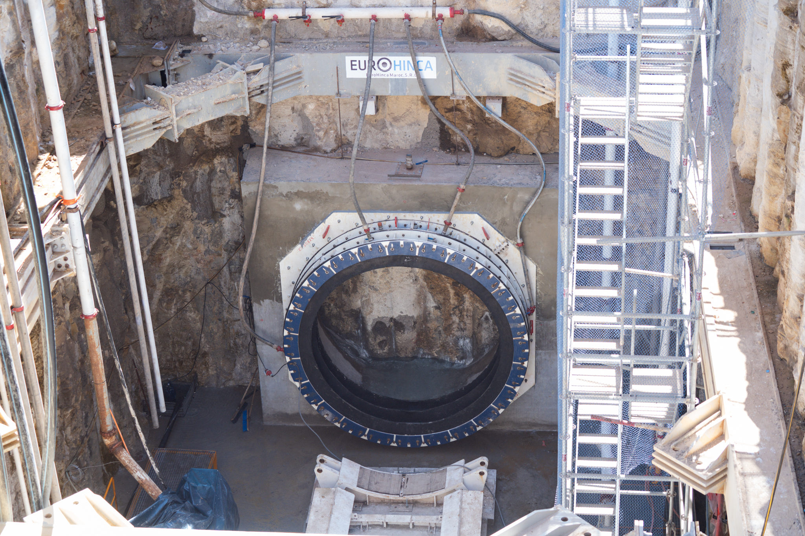
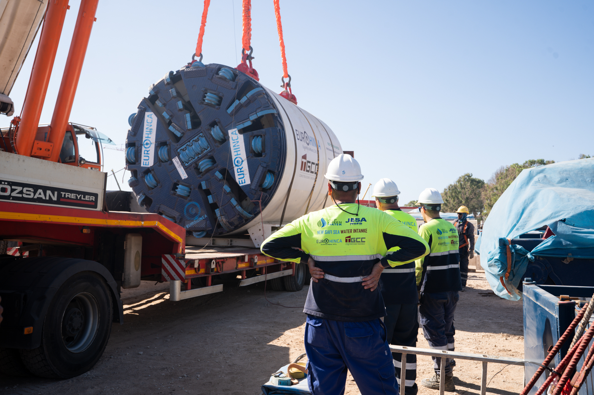
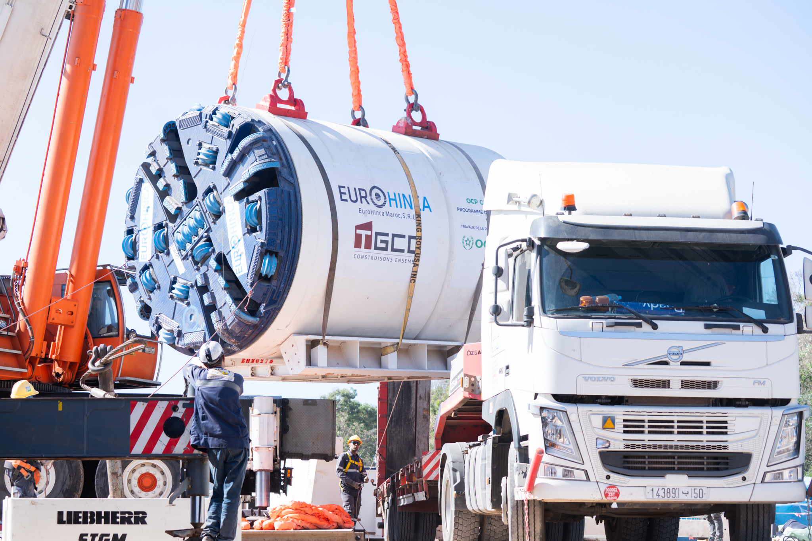
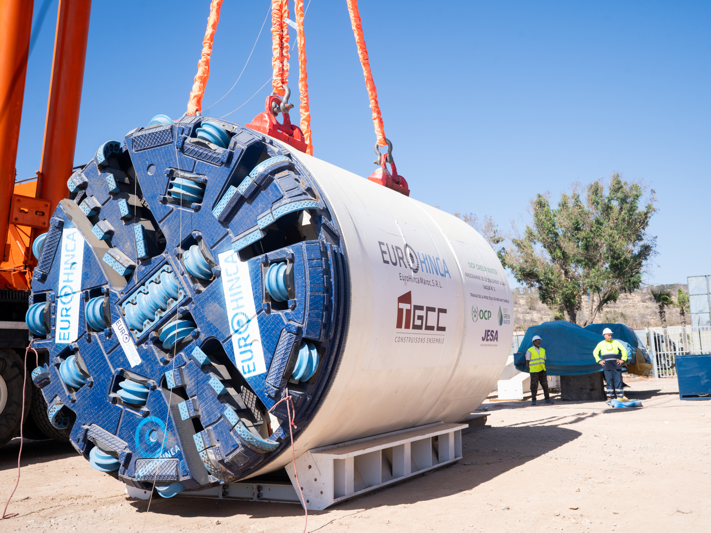
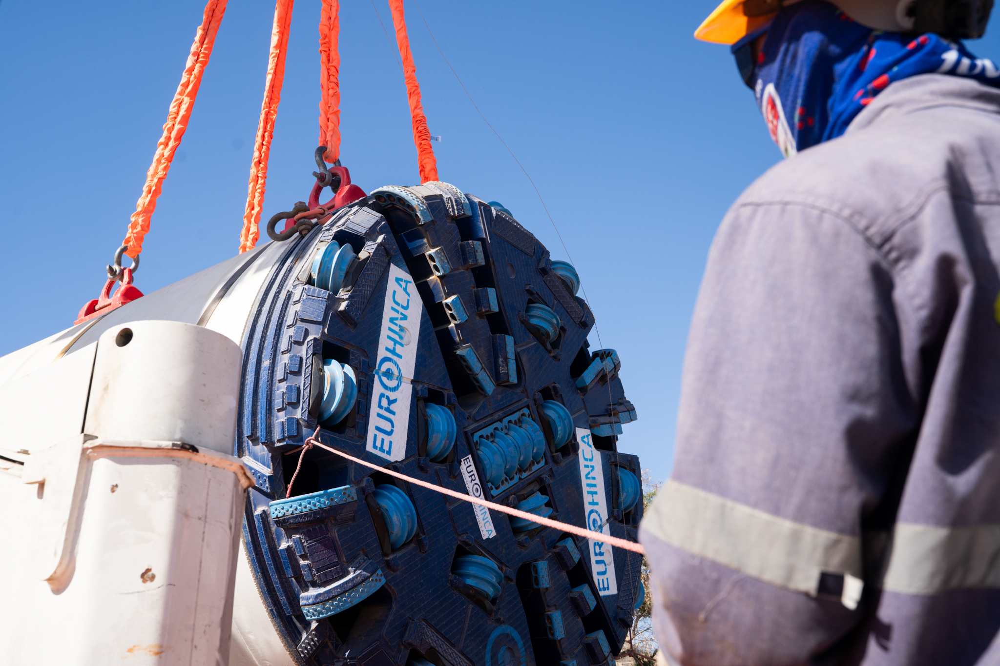
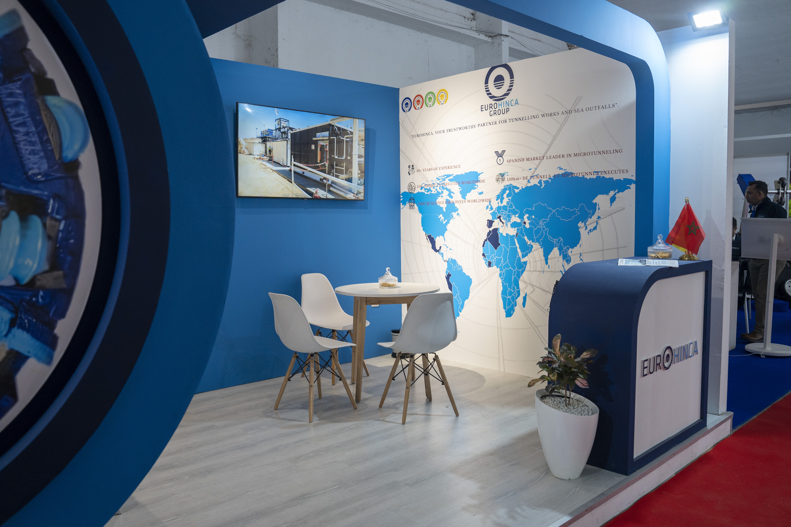
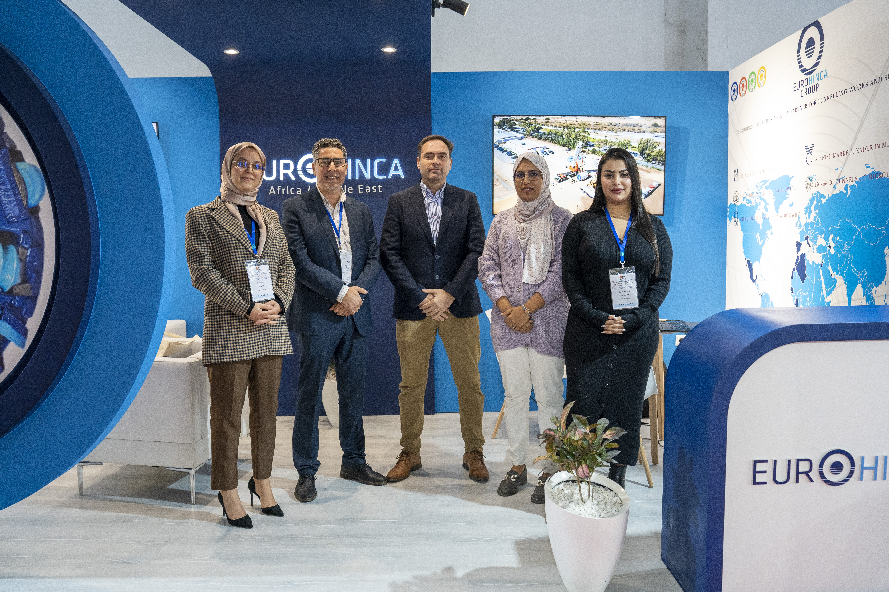

Creusement de tunnels et microtunnels sans tranchée à l'aide de tunneliers télécommandés.
Expertise mondiale, réalisations locales.


EuroHinca est une entreprise créée en 1996 qui se consacre depuis lors à la réalisation de microtunnels à l'aide de tunneliers télécommandés. Depuis sa création, EuroHinca a acquis 14 tunneliers et a exécuté plus de 120 km et plus de 250 sections.
Elle a mené à bien des projets allant de projets simples à d'autres qui représentaient des défis encore inégalés, se consolidant ainsi en tant qu'entreprise leader en Espagne et en tant que référence en Europe.
La filiale marocaine EuroHinca Maroc, S.A.R.L. apporte cette expertise de premier rang sur le marché africain, avec des réalisations importantes au Maroc pour des clients de renom tels qu'OCP, JESA et TGCC.
Des solutions de tunnelage avancées pour tous types de réseaux et d'infrastructures — cliquez sur une carte pour en savoir plus
Creusement de tunnels et microtunnels à l'aide de tunneliers télécommandés, sans excavation en surface. La technique phare d'EuroHinca depuis 1996.
Technique de poussée de tubes en béton ou acier guidée par un tunnelier, pour la pose de conduites de grand diamètre sous voies, routes et rivières.
Méthode innovante combinant microtunnelage et forage directionnel, permettant la pose de pipelines de grand diamètre sur de longues distances en une seule opération.
Conception et réalisation d'émissaires sous-marins pour le rejet d'eaux traitées ou industrielles en mer, dans le strict respect des normes environnementales.
Traversée sans tranchée d'obstacles naturels ou urbains majeurs : routes, autoroutes, voies ferrées, fleuves, zones protégées.
Contactez-nous pour discuter de votre projet et obtenir une étude personnalisée gratuite.
Nous ContacterDes projets d'envergure réalisés avec les plus grands acteurs de l'industrie marocaine




EuroHinca Maroc combine l'expertise du groupe espagnol leader en Europe avec une connaissance approfondie du marché local. Nos tunneliers de dernière génération nous permettent d'intervenir dans tous types de sols et de conditions géologiques.
Tunneliers télécommandés de dernière génération pour tous diamètres
30+ ans d'expérience mondiale transférée au marché marocain
Respect des normes les plus strictes en matière de sécurité et d'environnement
Une équipe marocaine formée et encadrée par les experts du groupe


Découvrez l'ensemble de nos équipements, technologies et réalisations. Notre catalogue détaille nos capacités techniques et notre gamme de tunneliers.
Télécharger le Catalogue (PDF)Notre équipe est disponible pour répondre à toutes vos questions et étudier vos projets
Angle Avenue Stendhal, Bd Ghandi
Casablanca 20000, Maroc
Lundi – Vendredi : 9h00 – 18h00
Samedi : 9h00 – 13h00